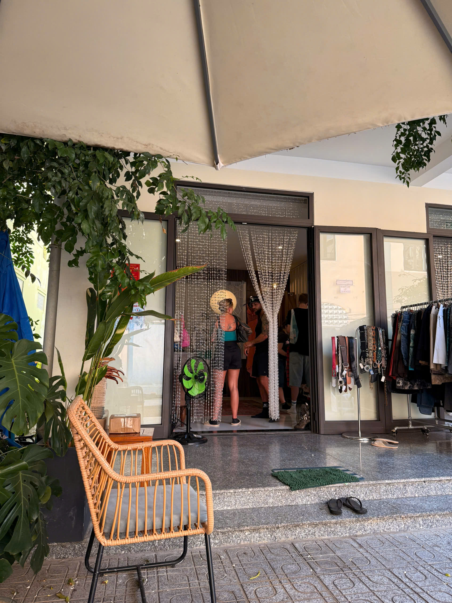

YEN MAY VINTAGE
Not more clothes. Just the right piece.
Curated Y2K & vintage pieces for people who care about shape, fabric, condition, and personal style.
Open daily 10:00–21:00 in Da Nang. Get directions and visit to try pieces on in person.
Get directions and visit
Curated weekly
Try on in store
Da Nang
ON THE RACK LATELY
Fresh finds, edited for shape and mood.
Stock changes fast. This page shows the feeling of the shop, not a full catalog.

01Soft knits, tiny tops, clean basics.

02Y2K silhouettes with attitude.

03Pieces picked for fabric and fit.

04Small details worth trying on.
WHY COME BY
Small shop. Clear eye. Better try-on.
Every hanger has to earn its place.
Try shape, length, fabric, and comfort.
Check seams, fabric, color, and feel in person.
REAL PEOPLE, REAL SHOP MOMENTS
Mirror checks, quick visits, small finds.
Customer photos keep the site grounded: clothes on bodies, not only on hangers.


SHOP TEXTURE
Good fabric, soft light, wearable mood.
Use these as a quick read of the Yen May rack: neutral, personal, easy to style.



WHAT PEOPLE NOTICE
Easy to browse. Easy to find something.
“Cute pieces, good mood, and not overwhelming.”“The kind of shop you want to stop by again.”
Small enough to browse slowly, curated enough to feel clear.
Come in, check fit, take your time, leave with one right piece.
Open daily, easy route, simple direction-first visit flow.
VISIT STORE
Get directions, come by, try pieces on.
Yen May is a small vintage stop in Da Nang for people who want to touch the fabric, check the shape, and leave with the piece that feels right.
45/3 An Hai Dong 1 Street, Son Tra, Da NangOpen daily 10:00–21:00 Get directions and visit
New arrivals move here first.
Follow for fresh finds, try-ons, and pieces that may not stay long on the rack.